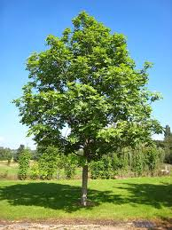
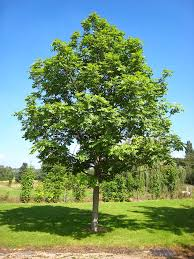

Elaborado por Abril González Mendoza


Elaborado por Abril González Mendoza
Se eligio una zona que nos brindaron las autoridades correspondientes
Antes de sembrar los pinos, limpiamos el terreno de basura, piedras y maleza. También hicimos hoyos de aproximadamente 40 cm de profundidad, dejando espacio suficiente entre cada uno para su crecimiento.
Colocamos cuidadosamente la planta de pino en el hoyo, asegurándonos de no dañar las raíces. Luego tapamos con tierra y apretamos un poco alrededor para que el árbol quedara firme.
Realizaremos visitas periódicas para regar, quitar la maleza y revisar el estado de cada árbol. También mediremos su crecimiento y anotaremos cambios importantes.
 

Elegimos pinos porque son especies nativas del clima templado de Ixtlahuaca, resistentes y de gran valor ecológico. Ayudan a conservar el suelo, capturan CO₂ y son refugio para aves y otros animales.
Las plantas utilizadas fueron Pino, adaptadas a la altitud y condiciones del municipio.